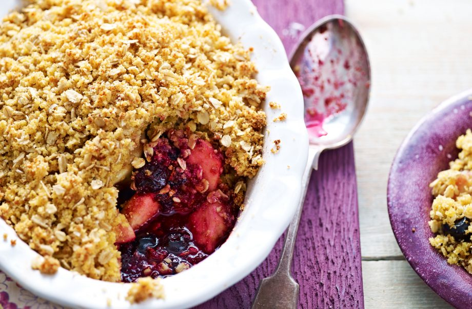

Gluten-free blueberry and apple crumble recipe

Serves:
Prep:
Cooking:
Skill:
6
10 Min
30 Min
Easy
This classic blueberry and apple crumble has been given a gluten-free makeover. For the topping use gluten-free brown bread and gluten-free oats. This recipe serves 6 people and will take 40 mins in total to make. A portion of this fruity crumble works out at only 303 calories per serving. The combination of soft tangy blueberries and tangy apples work wonders together. The whole family are going to love tucking into this summer inspired fruit crumble.
Ingredients
- 60g (2oz) golden caster sugar
- 2 tbsp crème de cassis or water
For The Crumble Topping:
- 60g (2oz) gluten-free brown bread (we used Genius)
- 60g (2oz) cornmeal or polenta
- 60g (2oz) gluten-free jumbo oats (such as Nairns)
- 60g (2oz) golden caster sugar
Method
- Set the oven to 190°C/Gas Mark 5.
- To make the crumble topping: Put the bread into a processor and whizz to make crumbs. Add the cornmeal, or polenta, and butter and whizz until just combined. Tip into a bowl, and stir in oats and sugar.
- Peel, core, quarter and slice the apples and put into the dish. Add the sugar, blueberries and crème de cassis, or water.
- Sprinkle the apple crumble topping over the fruit. Bake for 30 mins until golden. Serve warm or cold.
Top tip for making Gluten-free blueberry and apple crumble
If you have coeliac disease, oats are best avoided as, although pure oats do not contain gluten, they may be contaminated withgluten during processing.If you’re not coeliac, butstill don’t tolerate gluten,eating oats should be fine.